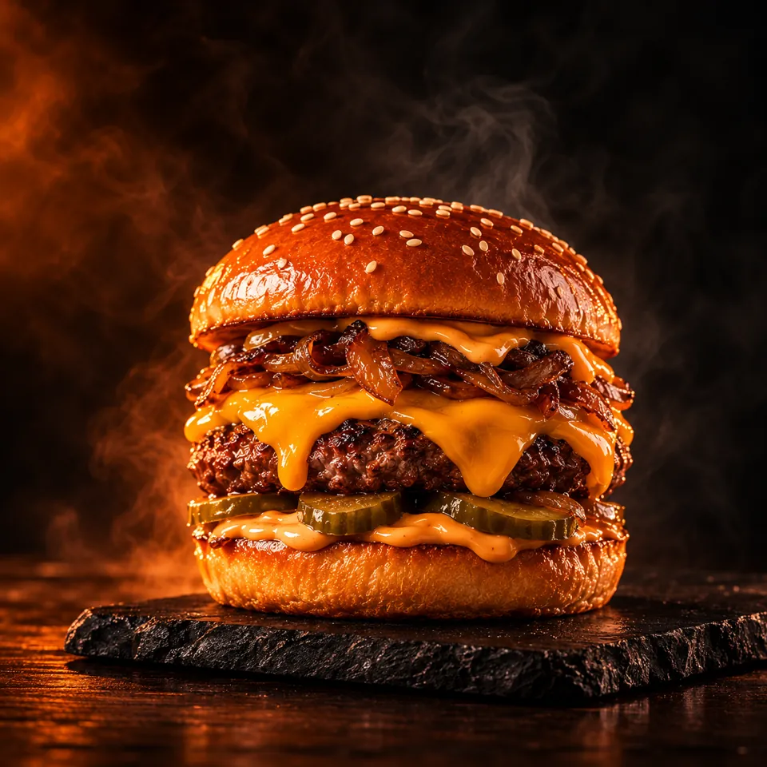
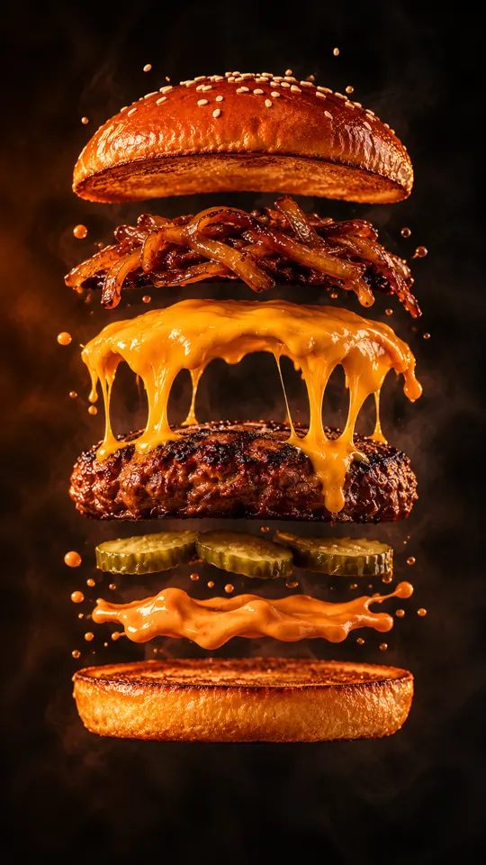
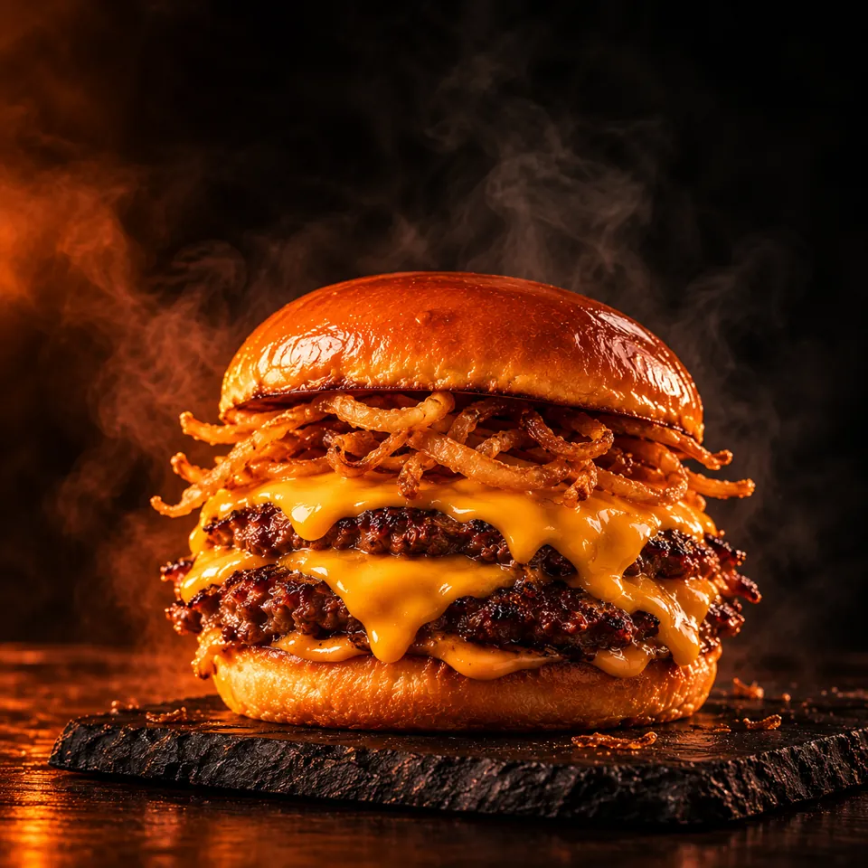
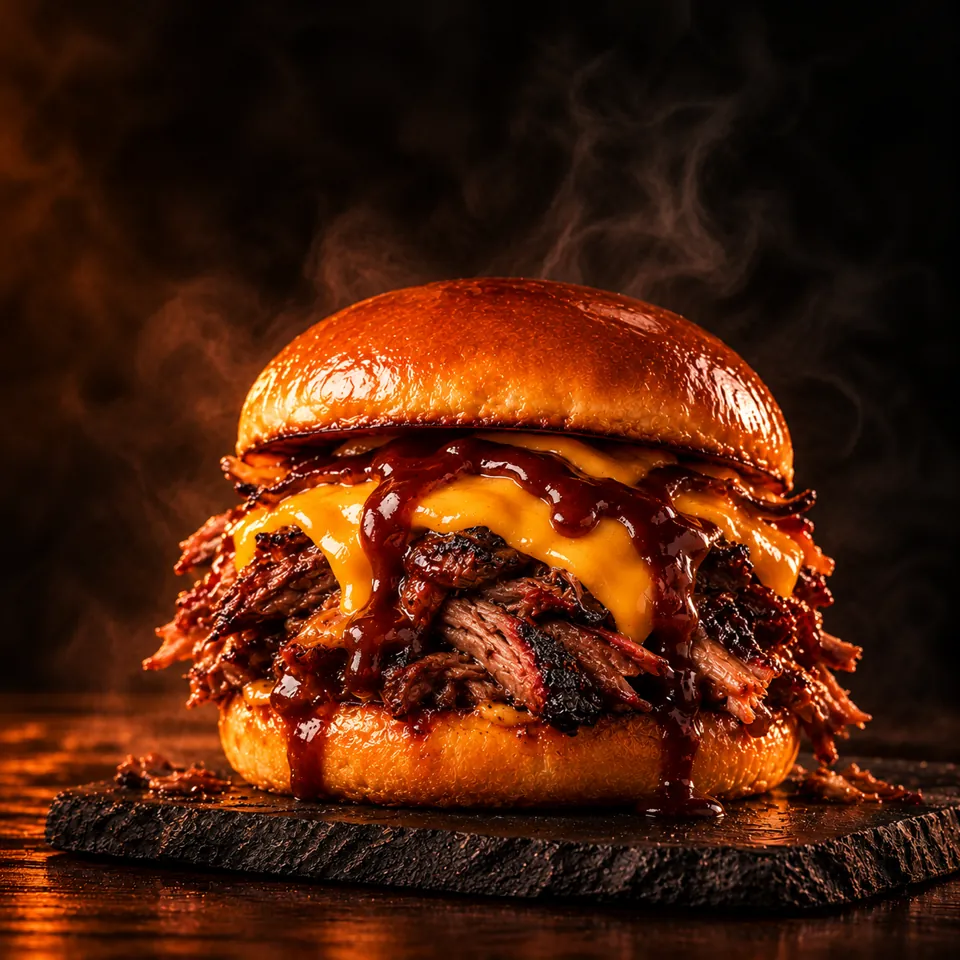
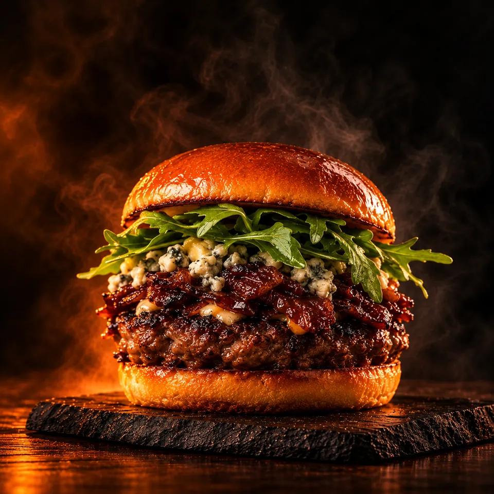
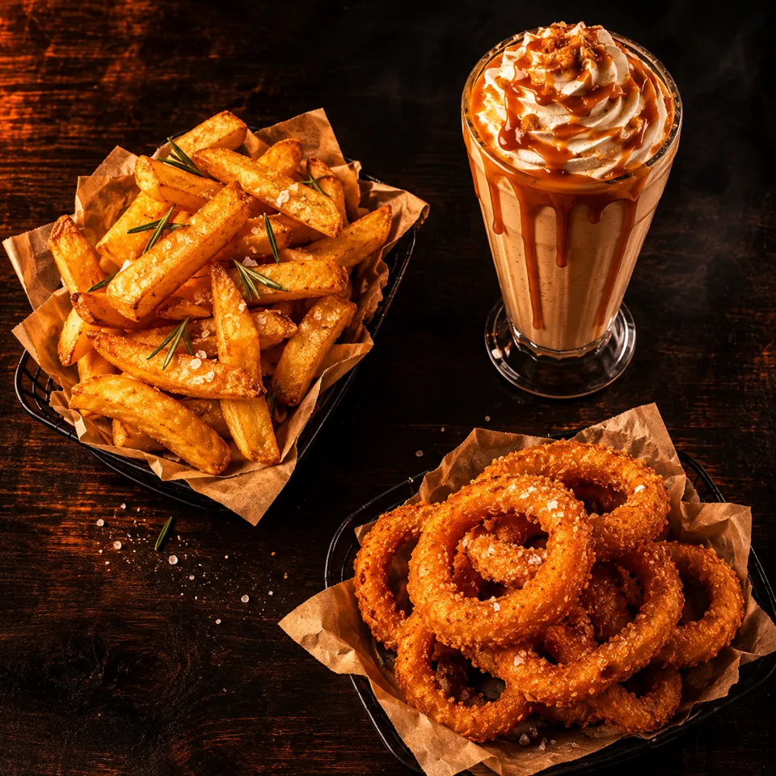
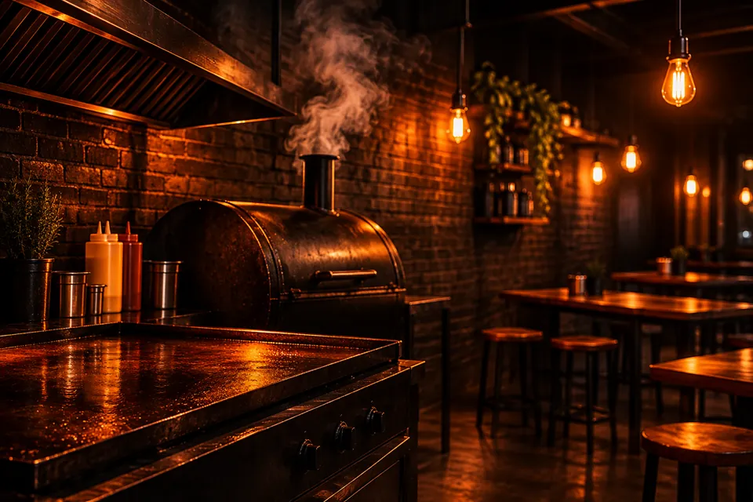
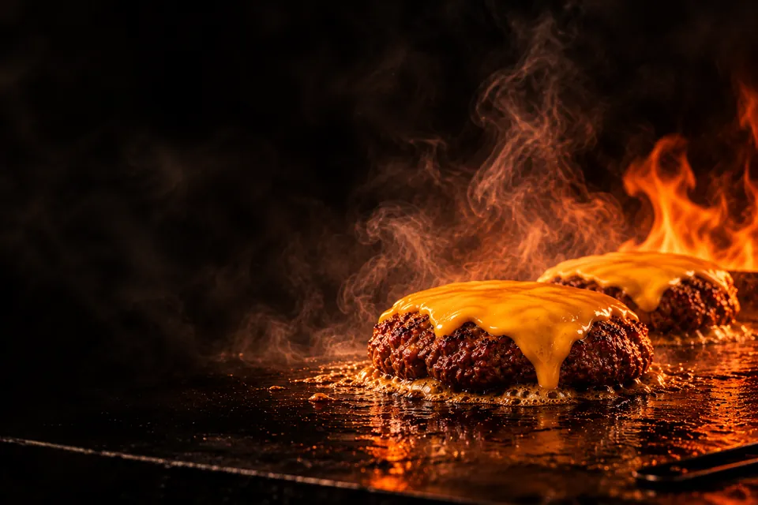

Brasa Clássico
R$ 34Blend 160 g, cheddar inglês, picles da casa, cebola na chapa e molho Brasa no brioche.
Pedir esteHamburgueria artesanal · Foz do Iguaçu
Carne moída no dia, pão assado aqui e chapa a 250 °C. Peça direto pelo WhatsApp e retire ou receba em casa.
01 Anatomia do Clássico
Role devagar ↓

02 Cardápio

Blend 160 g, cheddar inglês, picles da casa, cebola na chapa e molho Brasa no brioche.
Pedir este
Duas carnes de 90 g prensadas na chapa até a borda ficar crocante. Americano duplo e cebola crispy.
Pedir este
Costela desfiada depois de 12 horas no defumador, queijo prato e barbecue de rapadura.
Pedir este
Blend 160 g, geleia de bacon feita aqui, gorgonzola e rúcula. Doce, salgado e picante.
Pedir este
03 Como pedir
O preço é o do cardápio. A taxa de entrega é a do seu bairro, e a gente fala antes de você confirmar.
O cardápio chega na hora, com foto e preço.
Sem cebola, queijo dobrado, ponto da carne. É só falar.
Pix, cartão na entrega ou retirada. A gente avisa quando sair.
Turista? Entregamos nos hotéis do centro e da Av. das Cataratas até as 23h. Depois das Cataratas, a melhor parada é aqui.
Pedir no meu hotel
04 A casa
A costela entra no defumador às 6h da manhã e só sai à tarde. O pão sai do forno antes do almoço. A chapa de ferro acende às 17h e não apaga até o último pedido.
Dá para comer no salão, retirar no balcão ou receber em casa.
05 Dúvidas
Entregamos em todo o centro, Vila Yolanda, Jardim Central, Maracanã e na Av. das Cataratas. Fora disso, manda a localização no WhatsApp que a gente confere na hora.
No centro, cerca de 40 minutos. Sexta e sábado depois das 20h pode chegar a 60. Quando sair, a gente avisa.
Dá. O padrão é ao ponto, rosado no meio. Pede mal passado ou bem passado na mensagem.
Tem o Brasa Veggie, de grão-de-bico e cogumelo na chapa. Ele não está nas fotos, mas está no cardápio do WhatsApp.
Fazemos, a partir de 10 burgers, com até 1 dia de antecedência. Chama no WhatsApp que a gente monta um combo.
06 Onde fica
Endereço demonstrativo · Foz do Iguaçu, PR
| Terça a domingo | 18h – 23h30 |
|---|---|
| Segunda | Fechado |
| Delivery | até 23h |

A Brasa Burger é uma hamburgueria artesanal no centro de Foz do Iguaçu, no Paraná. Todo hambúrguer é feito com carne moída no próprio dia, numa mistura de acém, peito e costela, e selado numa chapa de ferro fundido a 250 °C, que forma a casquinha tostada por fora e mantém a carne suculenta por dentro. O pão brioche é assado na casa toda manhã.
O cardápio é curto de propósito: o Brasa Clássico, com cheddar inglês, picles da casa e cebola na chapa; o Duplo Smash, com duas carnes prensadas e bordas crocantes; o Costela Defumada, com costela desfiada depois de 12 horas no defumador e barbecue de rapadura; e o Bacon Jam, com geleia de bacon, gorgonzola e rúcula. Para acompanhar, fritas rústicas com alecrim, onion rings e milkshake de doce de leite. Também há opção vegetariana, o Brasa Veggie.
A Brasa Burger faz delivery próprio no centro de Foz do Iguaçu, Vila Yolanda, Jardim Central, Maracanã e na Avenida das Cataratas, inclusive em hotéis, com entrega em cerca de 40 minutos. O pedido é feito direto pelo WhatsApp, sem aplicativo no meio, com pagamento por Pix, cartão na entrega ou na retirada no balcão.
Para quem visita as Cataratas do Iguaçu, o Marco das Três Fronteiras ou faz compras no Paraguai, a Brasa Burger é uma opção de jantar perto dos hotéis, aberta de terça a domingo, das 18h às 23h30. Dá para comer no salão, retirar ou pedir no hotel.
Pedido de demonstração
Num site de verdade, o WhatsApp da hamburgueria abriria agora com a mensagem pronta:
A Brasa Burger é um projeto do Estúdio Forja. O seu negócio pode ter um site assim.